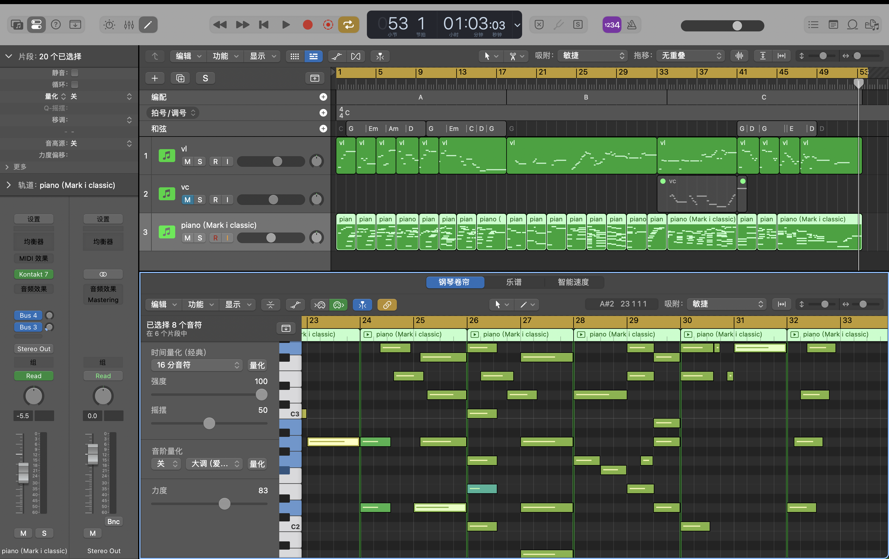

Audiovision Weekly Blog
Weekly reflections on sound exercises, creative process, technical experiments and personal development in Audiovision provided by SihaoWang(Benny)
Blog Note
Some of these entries were completed as catch-up reflections after the original class week. I have used this blog to document my learning process honestly, separate completed work from planned work, and identify the evidence I still need to add, such as exported audio files, screenshots and class feedback.
This blog is a record of my Audiovision learning process. It includes my sound experiments, creative decisions, technical notes and reflections on what I learned from each weekly task. Where an exercise still needs more evidence, I have marked the upload or screenshot area clearly so I can complete it with my own files.
Timbre: Exploring Kontakt Band and Orchestral Sounds
About Me
My name is Sihao Wang. I am interested in digital media, sound design and the way audio can change the emotional meaning of moving images. I chose Audiovision because I want to understand how sound, music and atmosphere work together to create a stronger viewing and listening experience.
In my previous creative work, I have mainly focused on visual design and editing, but this studio gives me a chance to pay more attention to sound as an independent creative language. I am especially interested in how small changes in timbre, rhythm and texture can completely change the feeling of a scene or a piece of media.
My Strengths in Sound
One of my strengths is that I am sensitive to mood and atmosphere. When I listen to music or sound effects, I usually think about what kind of image, memory or emotion the sound can create. I also enjoy experimenting with different layers and trying to combine sounds that have different textures.
Areas I Want to Improve
Across the semester, I want to improve my technical skills in audio production, especially using a DAW, arranging sounds more clearly, and making better decisions about mixing. I also want to become more confident when explaining my creative choices and evaluating both my own work and other students' work.
Task
For Week 2, the task was to open a DAW, load the Native Instruments Kontakt sampler, browse the libraries, choose sounds that were interesting, and compose a short track exploring timbre. For my piece, I focused on two types of sounds inside Kontakt: Band and Orchestral.
My aim was to explore the contrast between two sound worlds: the more direct and modern feeling of band instruments, and the wider, cinematic feeling of orchestral instruments.
Selected Sounds
Band Sound
The band sound felt more grounded and close to a live performance. It gave the track a clearer rhythm and a more human feeling. I used this sound to create the main body of the piece and to make the music feel more direct.
Orchestral Sound
The orchestral sound had a wider and more emotional quality. It felt more cinematic and dramatic, so I used it to add atmosphere, tension and depth. This sound helped the track feel larger and more immersive.

Week 2 work evidence: Kontakt Band and Orchestral sound experiment.
Creative Process
I started by browsing different sounds in Kontakt and listening carefully to how each instrument changed the mood of the track. I chose the Band sound first because it had a strong and familiar character. It helped me build a basic musical idea and gave the track a clear starting point.
After that, I added the Orchestral sound to create contrast. Compared with the Band sound, the Orchestral sound felt more spacious and emotional. I used it more as a background layer and atmosphere rather than only as a main melody. This helped the piece feel more cinematic.
During the composition process, I experimented with layering the two sounds together. Sometimes the Band sound made the track feel too direct, while the Orchestral sound made it feel more dramatic. I tried to balance them so that they could support each other instead of competing for attention.
Final Track Upload
week2 work
Reflection
Through this task, I learned that timbre can be just as important as melody or rhythm. Even when the musical idea is simple, changing the sound source can create a completely different emotional effect. The Band sound made the work feel more physical and performance-based, while the Orchestral sound made it feel larger, slower and more cinematic.
One challenge was controlling the balance between the two sounds. The orchestral layer could easily become too strong and cover the band layer, so I had to think carefully about volume, space and arrangement. This made me realise that sound design is not only about choosing interesting sounds, but also about deciding how they interact.
Harmony: Triadic Interchange and Kontakt Chord Tools
This is a catch-up entry. I have written it as a plan and reflection framework. After completing the actual audio exercise, I will replace the placeholders with my exported track, screenshots and any real feedback I receive.
Task Understanding
The Week 3 task focuses on harmony. The first exercise is triadic interchange, where a simple triad is copied and one note is changed by a semitone or tone. This creates a progression through small note movements rather than traditional functional harmony.
The second part involves using Kontakt's chord tools with a piano sound. The aim is to explore suggested chord progressions, trigger them with individual MIDI notes, and compare how different chord choices affect the feeling of the piece.
Planned Creative Process
I plan to begin with a simple piano sound so the harmonic movement is easy to hear. I will start with one triad, duplicate it several times, and change only one note each time. I will listen carefully to which changes feel smooth and which ones feel more like a shift into a different tonal world.
After creating a piano version, I will try replacing the piano with a different Kontakt instrument. This will help me compare how the same chord progression feels when the timbre changes.
Peer Feedback Plan
After I complete the track, I will ask a classmate to listen to the chord progression and comment on which chord changes feel natural or awkward. I will then update this section with their real feedback and explain what I changed in response.
Evidence to Add
- Screenshot of the MIDI chord progression.
- Screenshot of Kontakt chord tool settings.
- Exported piano version of the track.
- Exported alternative Kontakt instrument version.
- Short note from real peer feedback after listening.
the work
the work

Week 3 work evidence: harmony, triadic interchange and Kontakt chord experiment.
Reflection Framework
This exercise will help me think about harmony as movement between notes rather than only as chord names. I expect the limitation of changing one note at a time to make the process more controlled, but it may also feel restrictive if I want a more dramatic harmonic shift.
After completing the exercise, I will update this reflection with specific examples from my chord progression, including which changes worked best and which changes I decided to revise.
Rhythm: Pattern, Timing and Movement
This is a catch-up entry. I have written this section as a plan and reflection structure. I will update it with my real rhythm exercise, screenshots and audio evidence after completing the work.
Task Understanding
Week 4 focuses on rhythm. For this entry, I need to document how rhythmic patterns can create movement, tension and energy in a sound piece. Instead of only focusing on melody or atmosphere, this week requires attention to timing, repetition and variation.
Planned Creative Process
I plan to create a short rhythmic study in the DAW using a simple repeated pattern. I will start with a clear pulse, then gradually add extra layers. I want to explore how rhythm becomes more interesting through small variations, rests and changes in density.
I will also compare sounds with different attacks. Short sounds may work better for clear rhythmic hits, while longer sounds may create background movement. By combining them, I can test how rhythm and texture work together.
Evidence to Add
- Screenshot of the rhythm pattern or MIDI clip.
- Screenshot of the DAW timeline or arrangement.
- Exported Week 4 rhythm exercise audio.
- Short reflection on what rhythm choices worked or did not work.
Screenshot
Reflection Framework
This exercise should help me understand rhythm as a design tool. Rhythm is not only about creating a beat; it can control how the listener feels time, movement and tension.
After completing the exercise, I will evaluate whether my rhythm feels too repetitive or whether the layers create enough development. I will also reflect on how the rhythm could support moving image or audiovisual work.
Extreme Time Stretching: Paulstretch
This is a catch-up entry. I have written the section as a guide for completing the Week 5 task honestly. I will replace the placeholders with my real source files, rendered outputs, screenshots and final composition after completing the Paulstretch experiment.
Task Understanding
Week 5 focuses on extreme time stretching using Paulstretch. The task requires at least three different types of audio, at least five rendered outputs, and a new composition made from those stretched sounds.
The aim is to discover how ordinary audio can become atmospheric, abstract or cinematic when stretched. This exercise focuses less on traditional rhythm and melody, and more on texture, tone and slow changes over time.
Planned Audio Sources
I plan to use three different types of source material so I can compare how each one changes through stretching.
- Source 1: A short musical or instrumental sound.
- Source 2: An environmental or atmospheric recording.
- Source 3: A short sound effect or textured audio sample.
Rendered Outputs to Create
- Output 1: A soft stretched texture from the musical source.
- Output 2: A darker or longer stretched version of the same source.
- Output 3: An ambient layer from the environmental recording.
- Output 4: An abstract texture from the sound effect.
- Output 5: A selected or edited texture to use in the final composition.
Planned Composition Process
After rendering the stretched outputs, I will import them into the DAW and arrange them as layers. I will focus on gradual changes, fades, density and contrast rather than a traditional beat. The final piece should feel more like a soundscape or atmosphere.
Evidence to Add
- Screenshot of the three original audio sources.
- Screenshot of Paulstretch settings.
- Screenshot or list of the five rendered outputs.
- Screenshot of the final DAW arrangement.
- Exported final Paulstretch composition.
Screenshot
Reflection Framework
This exercise should help me understand how sound can be transformed beyond its original purpose. A short sound may become a drone, a musical sound may become a background atmosphere, and a simple recording may become cinematic or surreal.
After completing the task, I will update this reflection with specific comments on which source worked best, which output was most useful, and how the stretched sounds shaped the final composition.
Connection to Future Project Work
From this week onwards, I will also use the blog to document project progress and collaboration. I will include screenshots, drafts, production notes and feedback so the blog shows both finished outcomes and the process behind them.